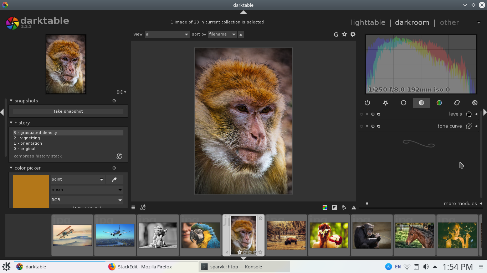

sparvk provides you with various tools to help you manage your photographs. At the file level it enables you to arrange all your photos in directories. By default sparvk comes with a Pictures directory. As the name suggests the Pictures directory is meant to function as your digital photo album. Here you can create subdirectories to file your photos in multiple albums. For example there can be a family album that keeps all the photos of your family members. There can be a holiday album keeping all your holiday pictures in one place.
The Pictures directory is accessible from the computer tab in the applications menu. Now if you'd like to backup all your images on the cloud there is always an option of connecting your directory to a network server. This way you get to access all your remote files from the comfort of your desktop.

Note how all the directories are kept organized to provide you with an uncluttered desktop experience)
Viewing and editing images
Of course you backup your photos only because you want to check them out later. Sparvk pods comes with a photo viewer application that allows you to

- Slideshow though your photos in full screen. So you can use the application to present your photographs
- Tag and rate your photos. Add a description to each of your images so you remember the story behind your photos.
- Rotate resize and flip images. View the exif data associated with each image. Move images around in files and folders in a graphical view.
For a more feature rich image management program install darktable.
- Open up terminal on your machine.
- switch to root by typing su on the terminal and pressing enter. You'll be prompted for your password.
- Type sudo apt-get install darktable and press enter.

This will install darktable on your sparvk pod and you should be able to find in from the applications menu. Besides all of the features we mentioned above darktable also allows you to crop and filter your images. Apply effects on them. Pick colors from any spot on the image map. Darktable is a fairly advanced tool that comes with two modes of operation.
- The darkroom that allows you to add effects to your imges
- The light table which is basically an image manager.
For serious photographers dark table can prove to be an invaluable tool.
sparvk pod comes with many more applications that you can install to allow rich image editing but as far as basic image management is concerned the default applications will be more than enough.